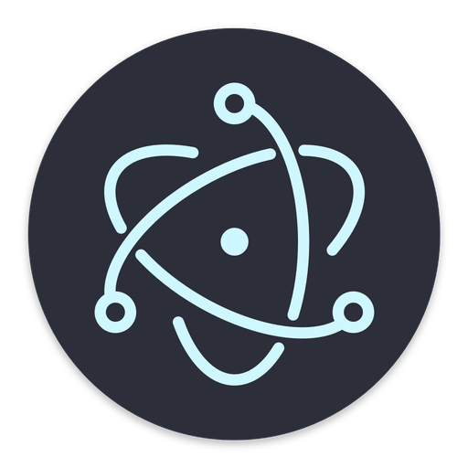

TODAY VS YESTERDAY

CODEX TRAFFIC STUDIO
Codex 流量统计
正在读取本机与远程数据源…
正在建立本地索引首次扫描较慢，之后只重读发生变化的会话。
HOURLY DETAIL
今天 昨天今日 / 昨日小时流量
TRAFFIC TREND
Token 流量趋势
非缓存输入 缓存输入 输出
MODEL SHARE
模型流量占比
PEAKS
按所选范围计算流量巅峰
SOURCES
Windows + WSL + 远程电脑数据源对比
DAILY DETAILS
包含无用量日期
最近 14 天每日明细
| 日期 | 总流量 | 较前日 | 非缓存输入 | 缓存输入 | 模型输出 | 推理输出 | 会话 | 轮次 | 工具 | 任务耗时 | 来源 |
|---|
PROJECTS
项目流量排行
TIME PROFILE
24 小时使用分布
TOOLS
工具调用排行
ACTIVITY
跨来源活跃日历
少多
INSIGHTS
效率与使用洞察
SESSIONS
跨来源会话明细
| 来源 / 会话 | 时间 | 项目 | 模型 | 非缓存输入 | 缓存 | 输出 | 任务耗时 | 总流量 |
|---|